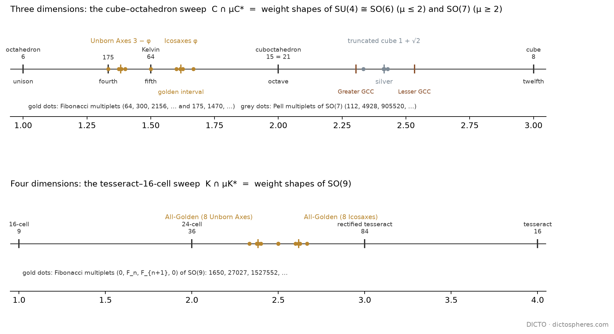

The sweep from the octahedron to the cube is the family of weight shapes of the particle symmetries SU(4) and SO(7), and in four dimensions of SO(9); every golden solid of the sweeps is where a Fibonacci ladder of multiplets converges, and the first half of the sweep is one musical octave
In particle physics every family of particles, a multiplet, has a shape: the points of its charges, its weights, span a polytope. For the symmetries SU(4) and SO(7) these shapes are exactly the solids of our cube–octahedron sweep, one multiplet per station with whole-number labels. The golden solids are never multiplets, because their numbers are not whole; they are where the Fibonacci multiplets converge, as the golden ratio is where the Fibonacci fractions converge.
Chapter 1 put the cube and the octahedron in one kaleidoscope (p = 4). Between them runs the sweep S(μ) = C ∩ μC* of #90 and #91: the cube C = [−1, 1]³ cut by its polar octahedron grown by μ, from the octahedron (μ = 1) through the cuboctahedron (μ = 2) to the cube (μ = 3).
Proof. A weight shape is the convex hull of the Weyl-group orbit of the highest weight, and it is the Minkowski sum of the fundamental shapes in proportion to the labels. For SU(4) the fundamental shapes are the tetrahedron T (ω₁), the octahedron O (ω₂) and −T (ω₃); with a = c the sum is a(T + (−T)) + bO = a·CO + b·O, whose walls are x = ±(a + b) (squares) and ±x ± y ± z = 2a + b (hexagons); scaling by 1/(a + b) gives C ∩ μC*. For SO(7) the orbit of (b + c/2, b + c/2, c/2) under the signed permutations is the truncated cube with corners (±1, ±1, ±s), s = c/(2b + c), the section at μ = 2 + s. For SO(9) the walls of the orbit of λ are x₁ = λ₁ and |x|₁ = Σλ. (d): μ = φ needs a/b = φ; μ = 3 − φ needs a/b = 1/φ; μ = φ² needs c/b = φ; μ = 1 + √2 needs c/b = √2; the Fibonacci and Pell ratios are the best approximations of these. ∎

| Ladder | Multiplets (dimension) | μ | Limit |
|---|---|---|---|
| SU(4) Fibonacci | 64, 300, 2 156, 19 200, 218 700, 2 877 231 | 3/2, 5/3, 8/5, 13/8, 21/13, 34/21 | Icosaxes, φ |
| SU(4) reversed | 175, 1 470, 11 200, 127 575 | 4/3, 7/5, 11/8, 18/13 | Unborn Axes, 3 − φ |
| SO(7) Pell | 112, 4 928, 905 520, 411 098 688 | 7/3, 17/7, 41/17, 99/41 | truncated cube, 1 + √2 |
| SO(9) Fibonacci | 1 650, 27 027, 1 527 552, 142 074 933 | 5/2, 8/3, 13/5, 21/8 | All-Golden (Icosaxes cells), φ² |
| SO(9) reversed | 15 444, 1 005 312, 77 144 760 | 7/3, 12/5, 19/8 | All-Golden (Unborn Axes cells), 2 + 1/φ² |
Along the SU(4) Fibonacci ladder the cubic tone of #94 fades to silence, 0.153, 0.050, 0.020, 0.008, 0.003, 0.001: the multiplets become more and more icosahedral, and only their limit, Icosaxes, is exactly so. The Golden Cut Cubes need label ratios 0.874… and 2.288… in the field of √2 and √5, with irregular continued fractions: no simple ladder reaches them, as #90's field obstruction leads one to expect.
For SU(4), μ = 1 + a/(a + b) takes every ratio between 1 and 2: the first half of the sweep is one octave, the octahedron its unison and the cuboctahedron its octave, and every just interval is a multiplet. The cube half (SO(7)) runs from the octave to the twelfth.
| Interval | Ratio | Cents | Multiplet | Cubic tone Q₄ |
|---|---|---|---|---|
| unison | 1 | 0 | 6 (octahedron) | 0.764 |
| major third | 5/4 | 386 | 384 | 0.552 |
| perfect fourth | 4/3 | 498 | 175 | 0.420 |
| perfect fifth | 3/2 | 702 | 64 (Kelvin) | 0.153 |
| minor sixth | 8/5 | 814 | 2 156 | 0.020 |
| golden interval | φ | 833 | limit: Icosaxes | 0 |
| major sixth | 5/3 | 884 | 300 | 0.050 |
| octave | 2 | 1200 | 15 (cuboctahedron) | 0.191 |
The cubic tone falls silent exactly at the golden interval, between the minor and the major sixth, whose multiplets are its first Fibonacci approximants. The least “whole” of all intervals is where the cubic order is fully hidden.
Known: weight shapes as Weyl-group orbit hulls and their Minkowski additivity; the truncated octahedron as the permutohedron, the weight shape of SU(4)'s 64; the cuboctahedron and octahedron as the shapes of the 15 and the 6 (Georgi, Lie Algebras in Particle Physics; Humphreys, Reflection Groups and Coxeter Groups). New here: that these shapes are exactly the stations of the sweep with the stated μ, so that DICTO's named solids — Icosaxes, Unborn Axes and the DICTO All-Golden Polytopes — are the limits of Fibonacci ladders of multiplets, the truncated cube of a Pell ladder, and the Golden Cut Cubes of none; and the reading of the first half as an octave of just intervals, with the cubic tone silent at the golden interval.